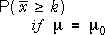
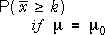

| Decision | |||
|---|---|---|---|
| accept H0 | reject H0 | ||
| Truth | H0 is true |  | |
| HA (H0 is false) | |||
Sample of n = 16 values from normal population with σ = 4
H0 : μ = 10
HA : μ > 10
| Decision | |||
|---|---|---|---|
| accept H0 | reject H0 | ||
| Truth | H0 is true |  | |
| HA (H0 is false) | |||
Use this diagram to:
The diagram is for a 1-tailed test for µ based on known σ. Drag the top slider to move the cut-off for accepting/rejecting H0 and see why it is impossible to simultaneously decrease both error probabilities.
There is a trade-off between the acceptable sizes of the two types of error.
Adjust the cut-off to make prob(Type I error) = 0.05. Say that this is the decision rule for a 5% significance level. Adjust the cut-off for a decision rule with 1% significance level.
For a test with 5% significance level, k = 11.64.
Mention that the alternative hypothesis includes many different values of µ. Drag the slider at the bottom left to alter µ and note that the probability of a Type II error changes. However changing the cut-off at the top still involves this trade-off between the two types of error.